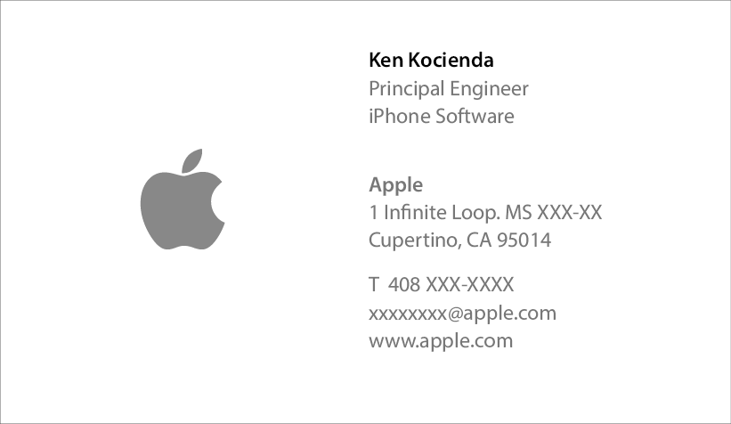
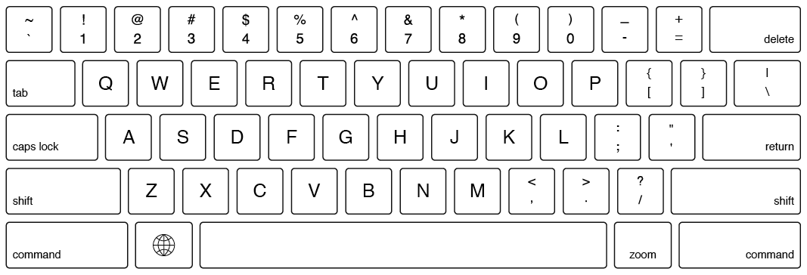
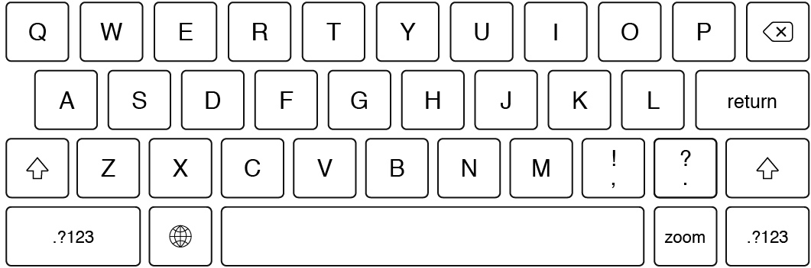
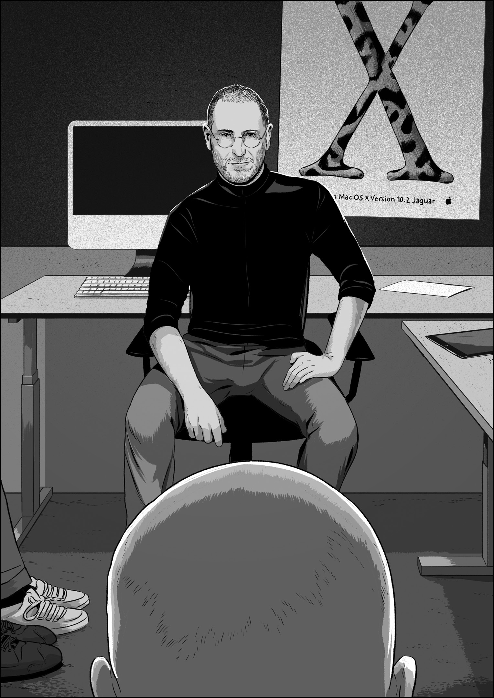

“Bzzt.” I looked down at my iPhone. I had been nervously turning it over in my hands for the last half hour. Now, finally, I got the text I had been expecting.
It said, “Any minute now.”
I replied, “OK.”
I had been sitting forward, elbows perched on my knees, fidgeting uncomfortably in an otherwise comfortable leather chair, one of a set arranged as a casual meeting area near the elevators of the second floor of Apple Headquarters, Infinite Loop Building 2, in Cupertino, California. Message received, I got up from my chair, returned my iPhone to my pocket, and walked a few steps down a quiet hallway until I stood outside of the conference room called Diplomacy. When the door opened, I would be invited in to give a demo to Steve Jobs.
It was the late summer of 2009, and I was making software prototypes for a new product, an as-yet-unnamed tablet computer. A little more than two years before, Apple had introduced the iPhone, which was then beginning to realize its vast potential in the marketplace, just as it had captured the fancy of the computing cognoscenti on the day it was released. Now it fell to people like me, a programmer on the iOS software team, to help create a fitting follow-up.
I’d worked on the iPhone as well, starting in 2005. Through twists and turns, which I’ll describe in detail starting in chapter 6, “The Keyboard Derby,” it became my job to write the software for the iPhone keyboard, with my main focus on the autocorrect feature, the code responsible for turning your acxuratw tyoinh into accurate typing.
Throughout the development of the iPhone, we referred to the keyboard, often quite nervously, as a “science project.” When we started developing our touchscreen operating system, we didn’t know if typing on a small touch-sensitive sheet of glass was technologically feasible or a fool’s errand. As commonplace as virtual keyboards have become, in those days, the norm for smartphones was the BlackBerry, with its built-in hardware keyboard, its plastic chiclet keys, and its tactile thumb-typing. In contrast, the iPhone keyboard would offer tiny virtual keys that gave no feedback you could feel with your fingers.
An effective autocorrection feature would be essential, and I worked with the constant worry that my typing fix-up code might turn the iPhone into a punch line. Nobody at Apple wanted a repeat of the Newton, the handheld personal digital assistant the company marketed in the 1990s. Unreliable handwriting recognition gave the Newton a public relations black eye that never faded; the product never sold well, in large part due to its lackluster text entry; and the Newton never became the mass-market indispensable item it was intended to be.
My task was further complicated by Apple’s pervasive secrecy. On Purple, the project code name for the in-development iPhone, every detail was protected with need-to-know confidentiality. Few people had been given the chance to see or try the Purple software before Steve announced it in a high-profile keynote presentation in January 2007, so it was out of the question to treat my keyboard work as a real science project and conduct extensive trials on a broad population. I got feedback on the autocorrect feature from just a few dozen people before the whole world got a crack at it. No wonder we were nervous.
Standing in the hallway outside of Diplomacy, I had no time to think about the stress of the iPhone keyboard development cycle. I was focused more on the stress of the moment—an imminent demo to Steve. This new tablet, which Apple would introduce many months later as the iPad, would use the same operating system as the iPhone but would have a larger screen. This brought a new set of keyboard challenges, and I was ready to present my solution for one of them. Demos like this were the foundation of the Apple software development process, as you’ll see in the case of this iPad demo and as I’ll describe in many other demos throughout this book.
I never demoed my keyboard to Steve while our Purple smartphone was in development—someone higher up in the organization had always done it for me. The success of the iPhone keyboard had, apparently, enhanced my standing. My managers didn’t come right out and say so, but their invitation to meet with Steve, coming as it did only after I had proven myself by delivering iPhone autocorrection, showed me what it took to get direct access to the company’s famous CEO.
This would be my second Steve demo—the first had happened a few weeks earlier, when I’d shown him font options for the high-resolution Retina display planned for the iPhone 4. That demo had gone well, and since I was being invited back, I began to feel that I had made it into the inner circle of people in Apple product development who would routinely demo software to Steve. I don’t know exactly how many people were in this group, but there weren’t many. Perhaps a few dozen. Of course, there were even more exclusive circles. I was still in the hallway waiting to be called in, while there were people already sitting with Steve inside Diplomacy.
Steve was at the center of all the circles. When he was in sufficiently good health—he had returned only a couple months earlier from his second health-related leave of absence in five years—he made all the important product decisions. He used these demo reviews as his chief means of deciding how Apple software should look and feel and function.
From my standpoint, as an individual programmer, demoing to Steve was like visiting the Oracle of Delphi. The demo was my question. Steve’s response was the answer. While the pronouncements from the Greek Oracle often came in the form of confusing riddles, that wasn’t true with Steve. He was always easy to understand. He would either approve a demo, or he would request to see something different next time. Nevertheless, some mystery remained. No matter how good your work was, or how smoothly it had sailed through the preliminary reviews leading up to him, you could never know how he would react. Sometimes he’d say he loved or hated something but then reverse himself in midsentence. Perhaps his change of heart might come a day or two later. Other times his opinions, once stated, held in place for years.
Then there were his moods. On any given day, he might give you a tongue-lashing during a demo if he didn’t like the work you brought him. Nobody was exempt either—not top-level executives he worked with every day and not programmers like me whom he didn’t know beyond a passing recognition. This was the price of admission to his demo room—either accept it, or don’t demo to him. It could be difficult to hang on while riding this emotional workplace roller coaster, and some begged off. One exceptionally talented and experienced colleague told me flat out that he refused to demo his own work in Diplomacy ever again because of the way Steve treated people in these face-to-face meetings. My friend continued to respect Steve’s taste, even though he deplored his temperament.
Although Steve’s opinions and moods could be hard to anticipate, he was utterly predictable when it came to his passion for products. He wanted Apple products to be great, and he insisted on being involved in the process as it went along, to guide the development of the work through his reviews. That’s why I was waiting to show him my demo. He wanted to see my latest progress and then push the work toward his ideal with his feedback and suggestions.
It was a sure thing that our tablet keyboard, a major new user interface element for a new product line, would need his direct approval. Whenever Steve reviewed a demo, he would say, often with highly detailed specificity, what he wanted to happen next. “Add more space between these two elements,” or “Replace the green in this graphic with blue,” or “None of this is working. Show me more options next time.” More generally, he was always trying to ensure the products were as intuitive and straightforward as possible, and he was willing to invest his own time, effort, and influence to see that they were. Through looking at demos, asking for specific changes, then reviewing the changed work again later on and giving a final approval before we could ship, Steve could make a product turn out like he wanted. Much like the Greek Oracle, Steve foretold the future.
I heard a door handle turn. I looked toward Diplomacy, the door now opened just a sliver, and a shard of light from the conference room brightened the darker hallway. As my eyes adjusted, I saw the backlit and smiling face of Henri Lamiraux, vice president of iOS software engineering. Henri cracked the door just wide enough to poke his head out. Even in the moment, I didn’t understand this theatrical beckoning. It was common knowledge that Steve saw demos in Diplomacy and that people would quietly come and go from the room on demo day. Yet this was no time to ask questions, and I felt a rush as I headed for the door.
Henri occupied a position where he interacted on a daily basis both with top executives like Steve and with individual programmers like me. He led the team of software engineers responsible for the apps that came as standard on the iPhone—Messages, Mail, Calendar, the Safari web browser—as well as the software kits Apple published for developers out in the world to make apps of their own to post and sell on the iOS App Store. Steve looked to him to deliver on the decisions that came out of these demo sessions, and Henri filled his role with his own brand of self-assurance coupled with a lack of self-importance. He wore a full beard, which he kept cropped close, and over his more than twenty years at Apple it had become less solidly black, more salt and pepper. A Frenchman with a strong accent—occasionally I could understand what he was saying only from the context—he had quaint pronunciations for a number of English words. My favorite was for “build.” When Henri said this common programming term, it came out as “bweeld.”
Henri had been my manager again for just a few weeks. I say “again” because I had reported to him several years earlier, before the iPhone project, when both of us were in different roles. I’d witnessed Henri’s ability to remain calm in stressful situations in an episode when I had sorely tested his patience, and I’ll relate that story later.
In the years since, I’d seen him demonstrate his calmness again and again. In the lead-up to a Steve demo, he could be counted on to keep his composure and smile through the tension. Henri acted as a buffer between his team of programmers and the company’s hard-to-please leaders. He edited expletives out of the executives’ requests before passing them down to individual coders. He might say to me “I just heard Steve reported a bad bug.” The actual message he’d received had been more like: “the f***ing caps lock button doesn’t work in today’s build! don’t you people test this f***ing keyboard?!” As Henri sifted through and related the details at such times, I appreciated his ability to project the confidence that everything would work out. He seemed to know that applying pressure on me wouldn’t help me figure out the fix for the bug any faster but that I would drop whatever I was doing and get right on it. In his way, Henri filled a role created by the personality of our intense CEO. He was a source of coolness that prevented us from constantly getting burned by Steve’s searing heat.
“Come in,” Henri said, smiling as he eased the door open a little more so I could walk through. I took a few steps to cross the hall. Deep breath. The demo was on, or so I thought. Turning to my right as I entered Diplomacy, I saw Steve. He was talking on the phone.
“Yeah, that sounds good,” Steve said as he leaned far back in an office chair, staring at the ceiling through round-rimmed eyeglasses, iPhone pressed to his ear, the sleeves of his black mock turtleneck tugged halfway up his forearms, legs crossed in front of him, the cuff of his jeans riding up on his calves to reveal several inches of dark socks above his gray New Balance running shoes. The uniform. He didn’t appear to have any lingering illness-related lack of energy, and for the moment, he was directing all his focus toward his phone call. I was surprised for a second or two, but quickly realized that I should stand there quietly and do nothing to draw attention to myself. I was in for more waiting.
It’s uncomfortable to listen to someone powerful and mercurial as they finish a phone call, and since I didn’t want to appear like I was eavesdropping, I put my hands behind my back and surveyed the conference room.
Diplomacy was about thirty feet long and fifteen wide, drab and windowless. A couch in the middle of the room faced the door, roughly dividing the space into two squares. A pair of eight-foot-long tables were pushed against the walls in the half of the room closer to the door. This created an area for demo devices to be laid out, and this was where all the action took place. The couch and tables were arranged end-to-end to form a U, and Steve’s office chair was positioned in the crook of the letter, while I stood closer to the open end by the door. I looked down and to my right, onto the table closest to me, and I saw my prototype iPad. It had my demo loaded on it.
Looking around again, I had the same reaction I always did when I set foot inside Diplomacy. The room was shabby, certainly not the decor you would expect in a company as obsessively design-focused as Apple. The table furthest from me only had an iMac on it. On the wall behind the computer, someone had tacked, a bit crookedly, an unframed poster for Mac OS X,* version 10.2, nicknamed Jaguar. If the poster’s tattered appearance didn’t give away its age—it was several years old by then—then its serif “X,” rendered with fur and spots, surely did. By that point, this “X” logo had been changed in steps through release after release to metallic gray and then to sans serif. This poster looked seriously dated. As for the tables, they were remarkable for being unremarkable. They weren’t the premium examples you might expect, lovingly crafted from the same light-colored wood favored for the display of products in Apple retail stores. No, these were plain, workaday gray tables with Formica tops. Standard-issue office furniture. Floor-to-ceiling whiteboards covered the wall to my left, and they were caked with a heavy accretion of pen marks, indifferently and incompletely erased. And then there was the couch. It was not clean. When you sat down on it, you sank into the cushions as you would on a mangy sofa in a college frat house. In the half of the room behind the couch, there were a couple of forlorn bean bag chairs piled in the corner, an homage to an earlier age in Silicon Valley. On the whole, Diplomacy was a study in indifference. It was an important room, often used for CEO demos, but it was never the center of attention itself.
By now, my glances around the room had killed a minute or two, but Steve showed no signs his call was about to end. I began to feel a self-conscious awkwardness that I was the only one in the room standing, but there was no more room on the couch after Henri sat back down, and Steve was sitting on the only chair. There was nothing for me to do but remain where I was until Steve finished his conversation. At one point, I looked over at Henri, who looked back with raised eyebrows and gave a little shrug, as if to say “I have no idea how long he’ll be.” I couldn’t imagine why Henri invited me in when he did, but again, this was no time to ask questions.
The people sitting with Henri on the couch were the true software development inner circle. They were the few Steve wanted around him to advise, consult, and bounce ideas around as he reviewed demos. They had done this for the iPhone, and now they were there for the iPad too. Each person had earned their place, and kept it, by consistently providing feedback that helped make the products better.
Sitting to Henri’s left on the couch was his boss, Scott Forstall, then the senior vice president of iOS software engineering. Scott reported directly to Steve, and he was the one giving me this chance to demo in Diplomacy. Scott expected me to keep it concise and on point when it was my turn to go. He didn’t tell me to do that—proper conduct was implicitly communicated through the success and failure of the earlier-stage demo sessions Scott ran himself, where he was the top executive in the room. The stakes in Diplomacy were obviously higher, now that his boss was in the room, and since Scott was my sponsor, my demo would reflect on him. Given what I took to be my new probationary status in the Diplomacy inner circle, I imagined that one bad demo might cause Scott to rescind my membership. Even though he never spelled it out, for all I knew, I might be a single boneheaded comment away from never being invited back.
Scott’s position was not nearly as precarious. His relationship with Steve was solid, and their partnership extended back to their time at NeXT, the computer company Steve founded after being fired from Apple in 1985. Ever since Apple acquired NeXT in 1996, Steve and Scott had collaborated closely on software.
I expect Steve valued Scott’s ability to imagine how new technologies might be integrated into our software products. Scott excelled at making these connections. If a programmer told Scott about an in-the-works software change to the touchscreen system that would make it possible to reliably differentiate between quick swiping gestures and slower panning gestures, Scott could visualize a user feature like swiping on an item in a list, say an email message, to delete it.
The software we created at Apple was an accumulation of such small details. Steve looked to Scott not only to make these kinds of intuitive leaps himself but also to build and lead a team that could make them in volume. This was part of Steve’s mission for Apple, the most significant strand of Apple’s product development DNA: to meld technology and the liberal arts, to take the latest software and hardware advances, mix them with elements of design and culture, and produce features and products that people found useful and meaningful in their everyday lives. Scott had the position he did because he could make these technology-to-people links as well as anyone, and he could do so with such deceptive ease, sometimes with a complete lack of pauses or throat stroking as he formed a steady stream of on-the-money reactions. His quick-wittedness could be unnerving. I found that Scott could make me feel that I needed to speak faster, so that he wouldn’t interrupt to finish my sentences better than I could finish them myself.
Sitting on the other side of Scott was Greg Christie, one of his other senior managers, the day-to-day leader of the Human Interface team, the software designers responsible for the look and feel of iOS and the Mac, as well as the concepts behind how these systems functioned. We shortened his group’s name to two letters in conversation, and as the HI team leader, Greg brought breadth and depth to the design of our apps and user interfaces. A flannel shirt–wearing, cigarette-smoking New Yorker, Greg had an encyclopedic knowledge of the history of computing, a tinkerer’s knowledge of analog and digital hardware, and a gut feeling for how to create software that made sense to people. A couple years earlier, Greg had given me crucial advice during the development of the iPhone keyboard. At a point when I was desperately stuck, he challenged me, point blank, to solve a problem I had been skirting—to make each key smaller than a fingertip and to develop the necessary improvements to my autocorrection code. Greg often provided the insight that some difficult development path was the best way to make our products easier to use. But he was never easygoing. He dragged around a metaphorical bear trap, one that was tripped by lackadaisical effort and bullshit excuses. Try to sneak a slipshod demo past him? You’d get caught in the jaws of a sharp rejoinder, which Greg would likely deliver with a loud snap. He wasn’t the most popular man in the company. However, to those who shared his high standards and his abhorrence of lazy justifications, he was unceasingly loyal and supportive.
On the rightmost end of the couch, sitting close enough that Steve could have kicked him with his outstretched leg, was Bas Ording, a designer on the HI team. Bas possessed genius-level skills in illustration, animation, and demo creation, and his deftness contributed much to the intuitive feel of iOS devices. When we needed a way to move up and down a list of items on a touchscreen device that didn’t have a mouse or arrow keys, Bas created inertial scrolling, the system of finger swiping that speeds up as you scroll repeatedly, glides to a rest when you stop touching the screen, and pleasantly bounces at the end of the list. All of us take this behavior for granted today only because Bas’s solution so clearly matched our sense for how this interaction should behave. Tall, thin, with short hair that he spiked so that it stood straight up on his head, Bas had the habit of adding a pleasant “ha-hah” chuckle onto the end of his sentences, as if you and he were in on the same joke together. Bas was one of Steve’s favorites. He was one of mine too. I loved working with him. The demo I had for Steve was our latest collaboration.
As I looked again at the faces and postures of these couch-sitters, I noticed that I wasn’t the only one trying to appear like I wasn’t snooping on Steve as his conversation wore on. The scene started to seem surreal and dreamlike. I looked again at the demo table behind the back of Steve’s chair. The iPad was still there—of course it was—but now I wondered: Was the battery charged? Was the dream going to turn into a nightmare?
The work on this keyboard demo had started about a month earlier—soon after I received a promotion to “Principal Engineer, iPhone Software.”

My new job was open-ended. I was expected to find, create, and contribute to projects that made our software better. As I tried to figure out what that meant, the HI studio became part of my normal rounds. One day I stopped by to visit Bas. As usual, he was up to something cool.
He’d built a demo using Adobe Director, a software package that, even back then in 2009, was a leftover from a bygone era of computing. Multimedia authors used Director extensively in the 1990s to create content both for distribution on CD-ROMs and for the interactive kiosks you might have found in a shopping mall to help you locate a shoe store or the food court. Flash, the web, and mobile computing had made Director obsolete, but Bas still preferred it, mostly because he was a whiz with the Lingo programming language integrated into the software. This allowed him to create fully interactive demos that superficially looked and behaved like a Mac or an iPhone, even though they were just pictures and animations woven together with a little Lingo code. Even though his demos weren’t “real” software we could ship to customers, Director enabled Bas to make quick prototypes that provided a good sense of how the real thing would work.
I looked over Bas’s shoulder as he started up his latest Director creation. On the screen of his Mac, I saw what looked like a stretched-out iPhone keyboard. The background, keycap, and key letter colors were the same, but the overall shape of the layout was considerably wider than it was tall. Bas told me this was his proposed design for the iPad keyboard. He’d made this demo to test some variations. Around the edges of his keyboard, Bas had a set of onscreen controls, and as he started to press the buttons and move the sliders, the background, keycap, and key letters on his demo keyboard changed. He made the keycap font bigger and smaller. He switched between light letters on dark keys and dark letters on light keys. He altered the dimensions of the space bar, delete key, and return key, and as they grew or shrank, the other keys changed shape to fill the gaps. Each option was accompanied by a carefully crafted animation that highlighted what was changing. As Bas took me through all his variations, he gave me a quick explanation that made every option seem reasonable and practical. Aside from the beauty of his animations, which succinctly called attention to the detailed differences in his ideas, the aspect ratio and overall key layout made the biggest impressions on me. His proposal for the iPad touchscreen keyboard looked much more like a keyboard on a desktop or laptop computer than the design we had on the iPhone. Punctuation keys and shift keys appeared in their traditional places. There was a number row on top, and these keys displayed the familiar two-character pairings: ! on the same key with 1, @ above the 2, and so on.
A few years earlier, Bas and I had collaborated on the design for the iPhone keyboard, and we’d struggled mightily with the constraints of the phone’s small screen size. After many experiments, we’d moved as many keys as possible off the main layout displaying the letters, devoting the reclaimed space to making individual letter keys as big as possible. Even then, a typical finger covered between two and three letter keys. In our final design, we made punctuation and numbers available under a separate layout accessible by tapping a .?123 key. We worried there would be howls and complaints about the inconvenience of this arrangement, but it turned out to be one of those things that people adapted to readily and accepted without much fuss.
As Bas stepped through different options in his iPad keyboard demo, he said he wanted to use the larger iPad screen to revert to a more traditional keyboard layout, like the one for the Mac keyboard on his desk. All along, as we chatted, he continued moving sliders and pushing buttons, and the demo kept up its delightful changes between variations on his general theme of a bigger screen giving us more space for more keys on our new tablet computer. Bas had created a little keyboard playground for himself, and his enthusiasm was infectious. When he finished up his demo and turned around to me, I had a smile on my face.
I returned to my office and thought about the demo Bas had just shown me. I pictured it running on the prototype iPad I had on my desk rather than on his Mac. The clearest image in my mind was the part about adding more keys. That seemed sensible, especially since we had room for more keys on the larger tablet screen. I thought that people would like typing periods and commas without having to tap the .?123 key.
As I glanced back and forth repeatedly between my prototype iPad screen and the hardware keyboard connected to my Mac, I had an idea. I picked up the iPad, turned it to landscape, and held it up over the Mac keyboard. I noticed that the long side of the iPad screen was about the same width as the top row of letters on the Mac keyboard. It occurred to me that I could take the ten letters from this top keyboard row, QWERTYUIOP, and fit them across the width of the iPad screen. There wouldn’t be room for number keys above the top row of letters, but that might be all right, since it would result in a design like the iPhone in terms of key layout, but on the larger iPad display, the keys would be almost as big as those on a Mac laptop. This was in contrast to Bas’s approach, which was to scale down the full Mac keyboard layout to the size of the iPad display.
Now I had two interesting ideas. My concept would offer bigger keys that would be easier to tap, but users would have to hunt around for numbers and punctuation. Bas’s design with more keys would make numbers and punctuation easier to find, but each key would be smaller so they all fit on the display. I decided to make a demo so I could try out both.
I had been responsible for the day-to-day maintenance of the keyboard code until just a few weeks earlier, when I got promoted, so I still knew the software like the back of my hand. I could write the code for two new keyboards in a couple days. I’d add one for the Bas layout with more keys and one for my layout with bigger keys. Building the demo in this way conferred a huge benefit. Unlike the Director demo Bas had shown me, which was just pictures and animations, my demo would be a fully functioning keyboard that would work in any iOS app.
As I thought about it more, I decided to make the keys on my bigger-keys layout match the dimensions on my Mac keyboard as closely as I could. Perhaps I could match the staggered positioning of the key rows as well. If I could mimic this overall geometry, maybe it would make typing on the iPad keyboard seem comfortable and familiar to Mac users.
To make this design work as accurate as possible, I had to take some measurements. I needed a ruler. I didn’t think I had one, but I rummaged through my desk drawers anyway, turning up a couple of old RAM chips, a few thumbtacks, and a collection of prototype iPhones, but no ruler. I asked some teammates on my hallway, but I got quizzical looks and shrugs—what does a programmer need to measure? I checked the hallway office supply cabinet. It contained a seemingly endless variety of paper clips, but still no ruler. Then I remembered there was a Target on Stevens Creek Boulevard in Cupertino, about a mile away.
On the drive over to Target, I conjured up an image of the ruler I would get. It would be beautiful, sturdy, made of metal, suitable for a professional draftsman, the kind of precision measuring instrument Apple might make. Target didn’t have anything like the Platonic ideal ruler of my imagination. The only ruler it had was one foot long and made of pale blue plastic with yellowish green accents. It looked cheap, and it was. I supposed that the decades-earlier, first-grader version of me probably would have been pleased enough with it, so long as a couple of Iron Man pencils found their way into the shopping cart as well, but honestly, the decisive moment for the ruler came when I noticed I could buy a semicircular plastic protractor in matching colors. Done.
When I got back to my office at Apple with my two new toys . . . ahem, tools . . . I started making measurements of my desktop keyboard and its keys, my laptop keyboard and its keys, my iPhone screen and its keys, and the iPad screen. I wanted to create my own personal database of these keyboard elements, to spend time with them, to build a feeling for these objects and their relationships to each other. I jotted down the sizes and angles of everything. I made some sketches in Adobe Illustrator, I overlaid sketches of this on top of sketches of that, and I thought about what to do. I started writing the code I would need to bring two new keyboards online. For the Bas/more-keys design, I would exactly copy the keys on my laptop keyboard, except I would leave off the function key row at the top. For my bigger-keys design, I would model it on the iPhone keyboard in terms of the available keys, but I moved the delete key and added a second shift key. I hammered out some more details, and I spent a couple days writing the code for the demo. Given that iOS already had the globe key to switch between keyboard languages, I treated my two new keyboards as if they were two new “languages.” My demo was ready. I went to show Bas.
He responded with a good-natured chuckle, which meant he liked it. He also had a suggestion. He didn’t like tapping the globe key to change between these two new layouts. After all, we weren’t changing languages. He said that we should add a new keyboard-switching zoom key next to the space bar. Press it once to zoom in to see bigger keys. Press it again to zoom out to see more keys. Bas said he would design an animation for the zooming. I thought this sounded great. I went back to my desk to add a zoom key.

The “more keys” layout Bas designed.

The “bigger keys” layout I designed.
A few days later, we had everything together. It was time to show more people. We put this demo on the schedule for the next round of iPad reviews, where Henri, Greg, and Scott looked at the latest demos. As they reviewed work, they decided whether a design might pass muster with Steve while also estimating whether Henri’s programming team could implement the idea in a high-performance, bug-free manner given the remaining time in the schedule. They were always wary of showing Steve something he might like but that we might not be able to ship in a product. Scott didn’t run an ivory tower research and development department. Our demos to Steve carried the promise that we could deliver, and since showing work to Steve implied this willingness to commit, very few demos shown for the first time in these earlier meetings proceeded to him without further refinement. Sometimes there were several rounds of feedback and changes over many weeks before Scott would give the approval to bring the work into Diplomacy.
Our iPad keyboard demo was unusual. We breezed through our pre-Steve review, largely as a result of Bas’s ability to tell the story of the software through the zoom animation he’d designed.
When you tapped the zoom button on our iPad demo, the keyboard you were looking at (say, mine) transitioned to the other one (his), much like clicking to go to the next slide in presentation software like Keynote or PowerPoint. The image of one keyboard disappeared to nothingness to reveal the other underneath. Bas added scaling to his animation—the keys of the departing keyboard changed size to match the one coming into view. He also tuned the timing of the animation, so it started slowly and sped up as it went, making you feel you had definitively landed once the animation finished. These effects were subtle, given that his animation was a mere fraction of a second, but Bas had a way of making these details count. When you looked at this zoom key animation, it appeared as if the keyboards were undergoing a complex morph. They weren’t. From an engineering perspective, this was significant, since the simplicity of the design meant I could write the code for his animation in just a couple hours. The magic was in the overall effect. The animation didn’t look like clicking from one slide to another in a presentation deck. When you tapped on the zoom button, it made you feel like one keyboard was becoming the other. The effect registered viscerally. It was exactly the kind of self-explanatory touch that made Apple software easy to use.
Everyone in the pre-Steve review had liked this notion of keyboard switching. We figured users would benefit from more flexibility when it came to typing on this new product. We thought this was an excellent use of the larger screen real estate we had on the iPad as compared to the iPhone. Some people might like a layout with more keys, since they had an intuitive feel for where all the letters, numbers, and punctuation keys were located. Others might like the layout with bigger keys, since they had a tactile sense for where the keys were located under their fingers. It was the best of both worlds. The zoom key made it easy and pleasant to try both of these two new keyboards and switch between them—there was no need to dig through some preference setting elsewhere in the system—and Bas’s animation made the feature seem special. Scott gave his approval to show the demo to Steve.
“Hey, all that sounds good,” Steve said, his voice breaking the near silence in Diplomacy, before saying “Right, I’ll call you.” His tone suggested the conversation was about to end, and the rest of us snapped to back to reality.
Steve said, “Bye,” took the iPhone away from his ear, and focused for a moment on tapping the red button to hang up. With that, he slid his iPhone back into the front pocket of his jeans, straightened himself in his chair, and then turned slowly to face me.
His eyes met mine. Over the years, many people have commented on Steve’s special ability to tell you something, whatever it was, no matter how implausible, and make you believe it. This reality distortion field, the RDF, has become legendary. Yet, in the moment Steve fixed his eyes on me, I felt an opposite force, the RDF with the polarity reversed. Like flipping on a light switch, Steve had turned on a no-nonsense zone around himself, one that banished all flummery and neutralized all pretense. His look wasn’t obviously unfriendly or threatening, but surely he knew his unblinking gaze could intimidate people in my position, and it certainly had that effect on me. I saw his look as a signal that he wasn’t going to let me pull the wool over his eyes. He was now ready to see my demo.
Scott stood up and crossed behind Steve’s chair. “OK, let’s look at this demo. Steve, this is Ken. He worked on the iPhone keyboard. He has some tablet keyboard designs to show you.” Scott introduced me as if it were the first time I had ever met Steve, even though I had demoed for him just a couple weeks earlier. If Steve had fond feelings for my previous work or recognized me from that previous demo, he didn’t show a flicker of either. Scott reached out to the prototype iPad without picking it up from the table, he clicked the home button, and when the screen woke up, he slid his finger to unlock it.
Steve was still looking at me. Continuing the demo introduction from where Scott left off, I said, “Right, there are two designs. One has more keys, like a laptop keyboard, and the other has bigger keys, like a scaled-up iPhone. We’re thinking of offering both. Try the zoom key to switch between them.”
Steve then slowly swiveled his chair around to the demo table. He looked down. In front of him, the iPad was in landscape, with the home button to the right of the display. An early prototype version of the iPad Notes app was running. The insertion point was blinking in a blank document. At the bottom of the screen, the Bas-designed more-keys layout was showing, looking just like a laptop keyboard, only with keys that were smaller than standard. Steve moved his eyes all over the iPad screen, rotating his head slowly in small figure eights, in what I took to be an attempt to get a view of every corner of the display, both straight on and in peripheral vision.

After several long moments of study, he reached out to tap the zoom key, triggering the beautifully crafted animation that Bas made to switch the keyboard to my bigger-keys design. No reaction, no hint of what he was thinking. Steve was like an expert high-stakes poker player checking his hole cards for the first time after receiving them from the dealer. Now that the screen looked different, Steve started his study all over again. He took his time, taking a solid thirty seconds to absorb every detail on the screen. Once satisfied, he tapped the zoom button again, returning the iPad to the more-keys layout. It now looked exactly as it had at the start of the demo. Steve studied again, still betraying no sign of what he thought or felt. He tapped the zoom key one more time, changing to the bigger-keys layout again. He took in this view briefly, to confirm to himself that he had now seen the two designs, everything there was on offer. He turned to look straight at me.
“We only need one of these, right?”
Not what I was expecting. I think I may have swallowed hard. Steve was still looking at me, and so, with a half shrug, I said, “Yeah . . . uh . . . I guess so.”
Steve sized me up a little and then asked, “Which one do you think we should use?”
A simple question, clearly directed at me and only me. Steve didn’t shift in his chair or motion toward anyone else in the room. It was my demo, and he wanted me to answer.
And then something happened. Standing there, with Steve Jobs staring at me, waiting for me to respond to his question, I realized that I knew what to say, that I had an opinion.
“Well, I’ve been using these demos for the past few days, and I’ve started to like the keyboard layout with the bigger keys. I think I could learn to touch type on it, and I think other people could too. Autocorrection has been a big help.”
Steve continued looking at me as he thought about my answer. He never moved his eyes to anyone or anything else. He was completely present. There he was, seriously considering my idea about the next big Apple product. It was thrilling. He thought for a few seconds about what I had just said and what he had seen on the iPad. Then he announced the demo verdict.
“OK. We’ll go with the bigger keys.”
That was it. The Oracle of Apple had spoken, the software design prophecy had been revealed, and with that, Steve gave a slight nod. The demo was over. Greg, Henri, and Bas stood up from their seats on the couch, and they offered a few encouraging comments like “Nice job” and “Good demo.” I reverted to my natural state as an introvert, and having just received far more than my recommended daily dose of concentrated eye contact, I looked at the floor. The intensity in the room quickly dissipated. Scott walked a couple steps toward the door, giving the cue that it was time for me to go, so the rest of them could move on to whatever was next. I opened the door of Diplomacy. Scott followed behind me to close the door quietly, staying in the conference room as I left. I took one step out into the hallway and, just before the door latched shut, I heard Steve say, “Thank you.”
* * *
Above the entrance to the Oracle at Delphi, there was a sign that read “Know Thyself,” an admonition to questioners entering the shrine that the answers they were seeking inside might actually lie within. As I walked away from Diplomacy, I felt the satisfaction that I had known in the moment, and all by myself, what to say about my demo to Steve.
That was just the first impression I had about this demo after it was done, and I’ve thought much more about this meeting since then.
When Steve asked for my opinion, it was a test. After looking at my demo, he wanted to find out, right there, if I could help make the software better. If I hadn’t given a satisfactory answer, he would have turned to the other people in the room. They had earned their places by repeatedly passing similar tests and making much work better, as on every software detail of the iPhone. If I wanted to keep presenting demos in Diplomacy—and I did, and I showed demos to Steve several more times in my career—making substantive contributions to the discussions with him was the way to earn future invitations.
For me, it would be the difference between writing software and influencing what software got written. In the case of this demo, my influence carried through, since the keyboard we shipped on the iPad was, barring a couple details like removing the now-unneeded zoom button, the same one I’d showed in my demo. I’d passed the test.
The relation of Diplomacy decision to shipping software also shows how important demos were to us at Apple. Demos served as the primary means to turn ideas into software. The setup of these demo review meetings reveals how we went about making our software great.
This statement includes the assumption that Apple made making great software an important goal to begin with. We did, and that came straight from Steve. He set the company’s priorities, and he stressed, in public statements and internal communications, that making great software was a core corporate focus. What’s more, Steve wasn’t merely interested in paying lip service to this goal. He demanded action, and so the software team produced demos in a steady stream, and whenever there was interesting new work, Steve found the time to attend a demo review so he could see it. His involvement kept the progress and momentum going.
Given this equation of many demos leading to a single product, the five of us in Diplomacy there with Steve formed a key unit in the process—we were a team that could create an individual CEO-level demo. Between us, we had everything we needed. I was a programmer. Bas was a designer. Henri, Greg, and Scott were editors. In this collaboration, some of these roles could be fluid. Bas sometimes wrote bits of code, and often his demos went directly to Steve without the help of a programmer like me. In the case of this keyboard demo, I contributed some design thinking by adding a second keyboard with bigger keys. Bas edited my choice of using the globe key to switch between the two keyboards I brought back to him.
Decisiveness was crucial throughout. At the pre-Steve level, Scott was the executive editor. He was the “decider.” Every Apple demo review had a decider, the person with the sole authority to approve or not and the prerogative to declare what would happen next. Yet, even before formal reviews—say in a meeting between relatively experienced contributors like Bas and me—each of us could decide about our own portions of the work and whether we were willing to exert the effort and hours needed to pursue a new idea or make an additional refinement. Once we submitted work for a review with our team or with more junior people who were performing work on assignment, the team manager would be the decider. This practice continued on up the management chain. In particularly busy periods, Henri would hold his own demo reviews for all of iOS engineering, where he was the decider before Scott. The need to keep churning out demos that could eventually be shown to Steve meant our day-to-day software development work became a pyramid of demos, reviews, and decisions building up to the top and to Steve’s final judgment.
Approving work wasn’t the only decision to make. When Scott chose to bring me, and not just my demo, to the review with Steve, it was his way of saying that my word on the iPad keyboard counted as much as my work on it. He widened this circle around Steve only with care. From what I could tell, Steve judged him in part on whom he chose to bring. Such hierarchically restricted access to the CEO can’t be too different from what happens with other large companies, but the way to get admission to these high-level meetings at Apple had much less to do with your place on the org chart and much more to do with your ability to make the products better. In those earlier instances when I handed over my iPhone keyboard prototypes to Henri for a Steve-level review I wouldn’t be attending, it was hard for me to realize that my demo mattered to the company but my presence at the discussion about it didn’t.
Scott also kept his job as demo gatekeeper for Steve because he advanced work only when it was of sufficiently high quality. Scott knew that he couldn’t bring third-rate demos, with a claim that his team had toiled away on it assiduously, hoping to weasel his way to a CEO buy-off. That would have been a good way to trigger Steve’s temper and a good way for Scott to lose his role as second-to-last decider. Scott also knew that he couldn’t fix the demo procedure by trotting out the equivalent of one decently fast Thoroughbred mixed in with a bunch of old nags, expecting Steve would be happy he could pick the winner. Steve could see right through such ploys.
My demo was up to standard, the result of my collaboration with Bas. We had a solid proposal built on three strong components: two keyboards plus a way—a button and its animation—to stitch them together. Once in the review session with Steve, our efforts met with his editing. In our case, Steve saw something he liked, but he found the demo unnecessarily complicated, so he unpacked it. This deconstruction wasn’t typical, but it was completely in character.
Even the discussion Steve used to arrive at his conclusion was spare and minimal. Note how Scott introduced my demo with just enough words to communicate to Steve what was next on the agenda, where he should turn his attention, and who I was. I, in turn, used the minimum number of words necessary to direct Steve’s attention further, so he knew exactly what to look at. After that, Steve looked carefully at the software and asked me succinct questions to see if the work could be made simpler.
This push for simplicity had a purpose. Even though he was a high-tech CEO, Steve could put himself in the shoes of customers, people who cared nothing for the ins and outs of the software industry. He never wanted Apple software to overload people, especially when they might already be stretched by the bustle of their everyday lives.
Consider a mom who was busy with her daily routine, on a day she was worried about her sixteen-year-old son, who was home sick from high school and was taking care of himself. She was running a few minutes late getting to the office because there was bad traffic on the road, she had a report due later in the afternoon, and she was trying to fit in one more email reply as she headed down the hallway toward her next meeting.
Steve believed she’d do better with a product that wasn’t loaded down with every thingamabob the product designers could dream up. He believed that stripping away nonessential features made products easier for people to learn from the start and easier to use over time. He wanted products and their software to speak for themselves. He realized that, in most cases, nobody would be standing over the shoulder of a person who is having their first experience with software, carefully describing every nuance of every feature. Sure, in a place like an Apple retail store, staff are always on hand to answer questions, but wouldn’t it be better if software was clear and intuitive right off the bat?
Steve used demo reviews to judge for himself whether features met this basic usability standard. When he gave me the specific feedback to remove one of the two keyboards from my iPad demo, it had a cascade effect toward greater simplicity. It meant we could also take out the Bas zoom animation. We could also take away the zoom button. We could also take away possible confusion about which keyboard to show in different situations. For example, should the software remember that you used the bigger-keys keyboard in the Notes app and the more-keys keyboard in Mail, and should these keyboard choices be restored in some situations but not in others? These questions became moot, and that’s good, because they don’t necessarily have easy answers. Steve figured that the best way to answer difficult questions like these was to avoid the need to ask them.
Steve’s brand of decisiveness permeated Apple. He surrounded himself with people like Scott, Greg, Henri, and Bas at least in part because they could make good decisions without long deliberation. When Steve questioned me, it was a test of my decisiveness and whether I could make my demo better than it already was. Nobody else in the room chimed in because Steve was clearly looking to me, and the most efficient way of giving him the answer he was looking for was for me to speak up. I did, and he closed the loop on my demo.
Once Steve gave his verdict, everyone else knew it would have been foolhardy to argue with him, not because Steve wasn’t open to contrary opinions but because doing so would mean speaking up in favor of adding back complexity. Hardly a winning hand. Scott, Henri, Greg, and Bas wouldn’t have earned their place in Diplomacy unless they had a well-tuned sense of when it was best to say nothing. Bas never expressed any disappointment over his zoom animation getting deleted either. Seeing good work wind up on the cutting room floor was part of the job.
Demo reviews were also part of Steve’s effort to model the product development behaviors he wanted us to use when he couldn’t be present. As in Diplomacy, the whole software organization kept meetings and teams small to maintain efficiency and to reinforce the principle of doing the most with the least. Steve’s constant demand to see a succession of demos spawned numerous other demos, each with their own presenters and deciders. All these demos helped the entire software team stay focused on making great products.
This was all down to Steve. When he tacked on his “Thank you,” it was his way of saying that my demo went just as he wanted. The meeting had been productive and decisive. It was a pattern to remember and replicate.
I chuckle to myself over how much time I’ve spent thinking about this iPad demo and how much Steve taught me in one meeting where he spoke just four sentences.
Note
* The “X” in this name is a Roman numeral, and Apple says the product is correctly named “Mac O-S Ten.” The affinity for obsolete number systems in the naming schemes of the company’s flagship products carried over into the iPhone X. Many people pronounce this “X” as “ex,” instead of “ten,” and who can blame them?